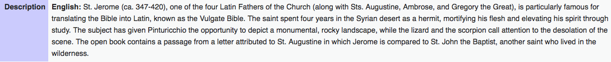
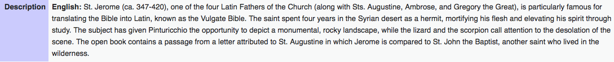

Jerome was last seen traveling with migrant farm workers
0
CLICK HERE TO FIND OUT MORE
Jerome has left the Internet. This platform has been created to look for Jerome. Any form of information is valuable.
just found this in a charity shop...they are everywhere
 
https://commons.wikimedia.org/wiki/File:Bernardino_Pinturicchio_-_Saint_Jerome_in_the_Wilderness_-_Walters_371089.jpg

https://commons.wikimedia.org/wiki/File:Bernardino_Pinturicchio_-_Saint_Jerome_in_the_Wilderness_-_Walters_371089.jpg

thank you to everyone, we love you all fans
we got this today from mary, we love you mary and all the people

How much was Jerome earning in the cafe?
http://www.vocativ.com/news/241487/fake-passport-prices-black-market/index.htmlanonymous sent us this, we love you anonymous and all the people
That looks just like them
These websites are our enemies! They are the sort of things that encourage Jerome's transmogrification.

New Wisdom Warrior prototype to see if Jerome is behind you:


This gif was sent to us from Jerome's mother.
She also stated:
"In the past months my Jerome kept speaking of reincarnation...always so obsessed about the idea of being able to change state and longing to be somone else or to be someplace else."
This is the last screenshot taken by Jerome, it was found on the right side of their desktop:

Key lifestyle attributes include the following:
- Cultural background
- Religious background and beliefs
- Values
- Political convictions
- Hobbies/Recreational activities
- Musical preferences
- Reading preferences
- Entertainment preferences (television viewing, moviegoing, etc.)
- Eating habits
- Travel/vacation preferences